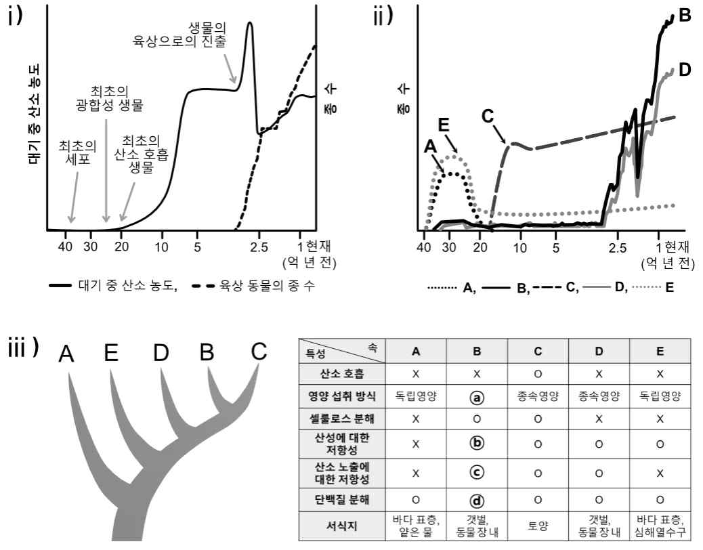

문제 1
1-1
제시문을 바탕으로 문제 (1)과 (2)에 답하시오.
원시 생명체의 진화에 큰 영향을 미친 환경 변화 요인 중 하나는 산소의 출현이다. 지구 대기 중 산소 농도의 증가는 원시 미생물 그룹 Snucocaceae(분류단계-과)의 각 분류군 특성에 따라 종 다양성에 다르게 영향을 미쳤다.
아래 그림은 i) 지구가 탄생한 46억 년 전부터 현재까지 대기 중 산소 농도 변화와 생물의 출현, ii) Snucocaceae에 속하는 5개 속(분류단계) A~E의 종 수 변화, iii) 각 속의 계통 관계와 주요 특성을 보여준다.

| 특성 | A | B | C | D | E |
|---|---|---|---|---|---|
| 산소 호흡 | X | X | O | X | X |
| 영양 섭취 방식 | 독립영양 | ⓐ | 종속영양 | 종속영양 | 독립영양 |
| 셀룰로스 분해 | X | O | X | X | X |
| 산성에 대한 산화능 | X | ⓑ | O | X | X |
| 산소 또는 빛에 대한 저항성 | O | ⓒ | O | O | X |
| 단백질 분해 | ⓓ | X | O | X | X |
| 서식지 | 바닷물 | ⓔ | 동굴잔디 | 식물체표면 | 심해열수구 |
(1) 그림 ii)에서 A, C, E의 종 수가 현재와 같이 변화한 이유를 각 속의 특성과 연관 지어 설명하시오.
(2) 그림 iii)에 제시된 B의 특성 중 ⓐ~ⓔ를 추론하여 설명하고, 그림 ii)에서 B의 종 수가 증가한 이유를 대기 중 산소 농도의 변화 및 새로운 생명체 출현과 연관 지어 설명하시오.